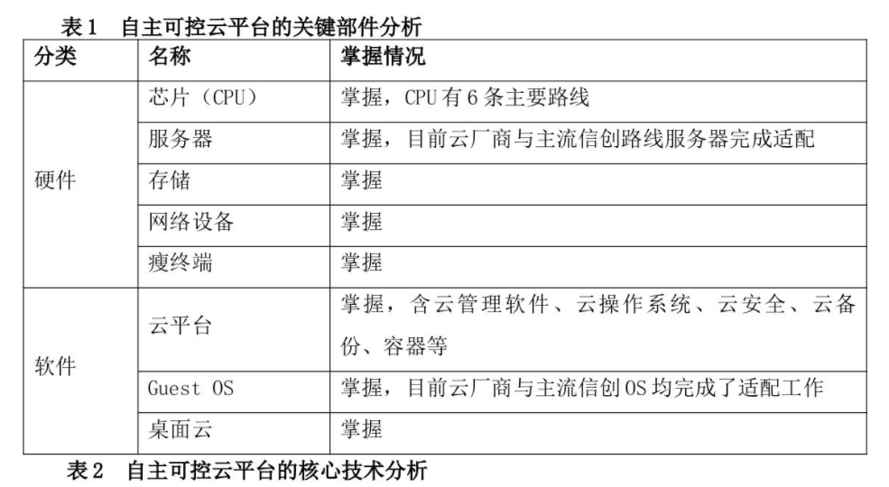
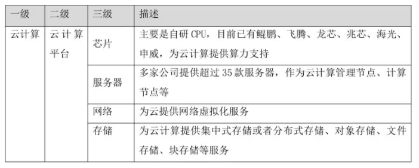
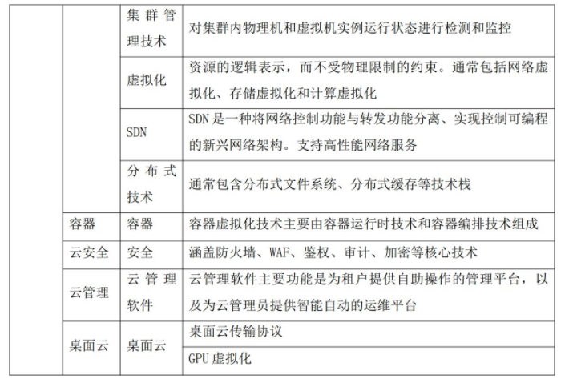

深度分析 | 中国云计算自主可控发展趋势
我国从上世纪90年代末开始底层基础软硬件的自主创新之路，经过“863”“核高基”时代的洗礼，我国底层软硬件已经实现了从无到有的重大进展。在技术、产品、供应链、生态等多个方面的投入与发展，使自主可控云计算平台具备了基础条件。表1和表2分别从关键部件、核心技术等方面分析了当前自主可控云计算平台现状。
表1：自主可控云平台的关键部件分析

表2：自主可控云平台的核心技术分析


自主可控挑战犹存
我国在云领域仍是跟随者，美国依然保持领先。
当前，对于自主可控云平台中的关键部件，我们已基本掌握现有技术，也有对应的产品。但还存在如下突出问题。以美国为例，其云计算企业在全球拥有的强大市场竞争力，使其得以引领全球云计算产业的发展，其中微软、IBM、谷歌、亚马逊、甲骨文等云服务企业几乎占领了全球大部分云服务市场。
进入云计算时代，OpenStack、容器等开源技术仍然由美国厂商掌控和引领，并且美国厂商在不断加大投入。国内厂商虽然积极参与开源社区建设，甚至成为开源的TOP级贡献者，但是要形成主导话语权还需要时间积累。一方面是对关键技术的掌握有限，另一方面，上层应用生态的迁移和开发，需要更长时间的积累和更大的投入支撑。
首先，开源已经成为云计算技术主流。在与云计算相关的虚拟化、容器、微服务、分布式存储、自动化运维等方面，开源已经在同领域内形成技术主流，并深刻影响着云计算的发展方向。同时，在开源技术的支持和推动下，云原生的理念不断丰富和落地，并迅速从以容器技术、容器编排技术为核心的生态，扩展至涵盖微服务、自动化运维（含DevOps）、服务监测分析等领域。
其次，开源垄断成为控制科技生态的新手段。在基础软件领域，开源一直具有重要的生态价值。以微软为例，不仅向开源社区投入了大量资金，成为开源社区重要的贡献力量，而且收购了GitHub，形成代码托管、开源协作、环境部署的完整生态链，达到技术生态垄断。
再次，构建开源生态道阻且长。由于国内开源生态建设起步较晚，一是对于开源核心技术的掌控能力有限，开源规则的运用不熟；二是开源生态领域企业、政府和社会三者之间的协同模式尚未形成，盈利模式尚未找到；三是开源创新的社会环境未形成，缺乏对开源社区治理活动的持续性资金和人才投入；四是由于语言障碍，融入国际开源社区较为困难，在国际主流开源社区和开源项目上缺少主导权和话语权。
最后，开源软件使用需要更加关注安全问题。开源软件具有版本通常由多人协作完成、开源许可证存在免责条款等特性，企业在使用开源软件时必须注意数据安全及隐私风险，若开源软件存有恶意代码、病毒或造成隐私泄露，将给使用者带来较为严重的危害。各云厂商对开源软件使用掌握能力各有不同，反而对其商用版本的软件提出了更高的要求。
信创应用迁移和适配难
在大数据时代，开源社区、云计算、分布式数据库、虚拟化集群等新兴潮流，在一定程度上冲击了国外云厂商的优势地位，甚至重新定义了大数据的技术路径和竞争边界。但整体来看，国外云厂商凭借生态建设积累起来的全球IT产业地位，仍然在短时间内难以根本性地撼动。
要解决各行业的存量应用和新增应用逐步转向新型的信创化平台上的问题，基于信创创新CPU架构的云平台软件，是屏蔽底层差异、快速实现基础软硬件替代的关键平台。当前信创化云计算平台虽然在功能和接口上已经基本具备了与底层创新CPU架构的适配，但在某些领域仍存在一定差距，如平台的资源利用率、性能、稳定性以及平台的自身可用度。
能否提供低成本的迁移方案，或者直接从产品层面做到无缝迁移，成为影响应用厂商和云厂商在信创市场影响力的重要因素。围绕“迁移”展开的研发投入和服务体系建设，也将极大增强政企客户部署信创云的信心。
对策建议
一是加速行业数字化转型，基于新型基础设施，提升自主可控云发展水平。推动国计民生行业积极参与云计算基础设施建设, 通过政策牵引，推动企业有目标、有节奏、分梯次实现业务云化和智能化转型升级。建设行业应用示范工程，逐步向全行业复制推广。鼓励业务创新，提升企业设备接入云比例，加大业务云化比例，有利于促进云计算产业的繁荣发展和成熟。
加强基于自研芯片的数据中心建设，到2025年，在新建设云计算数据中心，自研芯片的占比建议达到80%以上。基于ARM技术是我国芯片路线的主要代表方向，ARM架构的CPU在并发性能、功耗、集成度等方面都将长期保持领先优势。与此同时，随着业务云化进程的推进，在数据中心部署ARM架构服务器成为自然而然的事情。
二是全栈产品协同发展，促进信创云计算达到世界先进水平。在x86体系中，云计算技术是在x86生态体系完全成熟的情况下才逐渐发展起来的，云计算软件只需要聚焦自身软件功能的实现，就可以确保整体云计算解决方案的可用，不用太关心底层硬件性能。但在信创生态体系下，云计算作为新型基础设施的关键环节，需要与全栈数据中心基础设施的其他领域共同成长、协同发展，构建世界先进水平的云计算解决方案。
孵化我国云计算软件领域的龙头企业，引领技术发展方向。首先，开展云计算调度与虚拟化操作系统核心技术研究，建设我国原创的开源云计算社区，打造符合中国国情的原生开源社区，探索开源社区可持续发展模式。其次，研究分布式数据库、云数据库等交易型应用场景下的数据库创新技术，在金融、电信等关键领域开展核心应用系统的应用示范工程建设。再次，积极布局和投资ERP、CRM、制造、建筑、高性能计算等基础应用软件。最后，鼓励应用厂家与基础软件厂家联合协同开发，开展业务创新，构建新型业务系统。
三是构建原创开源社区和技术标准，加强与国际开源社区合作，建立立足中国、面向全球的开源生态和标准体系。通过构建我国原创开源生态体系、开源社区，与全球开发者共同建设一个开放、多元和架构包容的软件生态体系，覆盖操作系统、基础库、加速库、数据库、大数据、云计算、人工智能、边缘计算等。
构建核心标准体系，加强国际合作，围绕云计算产业建立标准技术体系，在国际市场上掌握话语权。识别云计算产业新兴核心技术环节，集中国内企业、科研机构、专家学者、产业优势力量，形成重点核心标准突破，在一些关键领域掌握技术主动权，推动我国云计算技术和产品的更广泛应用。